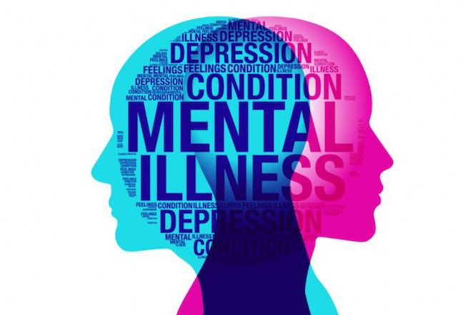

Info! Yuk cari tau tentang apa yang dimaksud kesehatan mental...

Apa Itu Kesehatan Mental??!
Kesehatan secara
umum
menurut WHO adalah “keadaan (status) sehat utuh secara fisik, mental (rohani) dan sosial, dan bukan
hanya
suatu keadaan yang bebas dari penyakit, cacat dan kelemahan” (Smet, 1994). Artinya, seseorang dinilai
sehat
apabila terjadi keseimbangan yang baik antara kondisi fisik dan mentalnya. Namun pada faktanya, masih
banyak
masyarakat Indonesia yang masih awam tentang kesehatan jiwa dan mental.Dan secara khusus, menurut Karl
Menninger, individu yang sehat mentalnya adalah mereka yang memiliki kemampuan
untuk menahan diri, menunjukkan kecerdasan, berperilaku dengan menenggang perasaan orang lain, serta
memiliki sikap hidup yang bahagia.
Selain itu, kesehatan mental merupakan suatu keadaan dimana seseorang tidak mengalami perasaan bersalah terhadap
dirinya
sendiri, memiliki estimasi yang realistis terhadap dirinya sendiri dan dapat menerima kekurangan dan
kelemahannya, kemampuan menghadapi masalah-masalah dalam hidupnya, memiliki kepuasan dalam kehidupan
sosialnya serta memiliki kebahagiaan dalam hidupnya.(Pieper dan Uden,2006)
World Health Organization (WHO, 2001), menyatakan bahwa kesehatan mental merupakan kondisi dari
kesejahteraan yang disadari individu, yang di dalamnya terdapat kemampuan-kemampuan untuk mengelola
stres
kehidupan yang wajar, untuk bekerja secara produktif dan menghasilkan, serta berperan serta di
komunitasnya.
Menurut sumber website kementrian kesehatan, Kesehatan mental yang baik adalah kondisi ketika batin kita
berada dalam keadaan tentram dan tenang, sehingga memungkinkan kita untuk menikmati kehidupan
sehari-hari
dan menghargai orang lain di sekitar. Sehingga, ketika seseorang dengan bermental sehat dapat
menggunakan
kemampuan atau potensi dirinya secara maksimal dalam menghadapi tantangan hidup, serta menjalin hubungan
positif dengan orang lain.Begitu pula sebaliknya, ketika seseorang yang kesehatan mentalnya terganggu
akan
mengalami gangguan suasana hati, kemampuan berpikir, serta kendali emosi yang pada akhirnya bisa
mengarah
pada perilaku buruk.